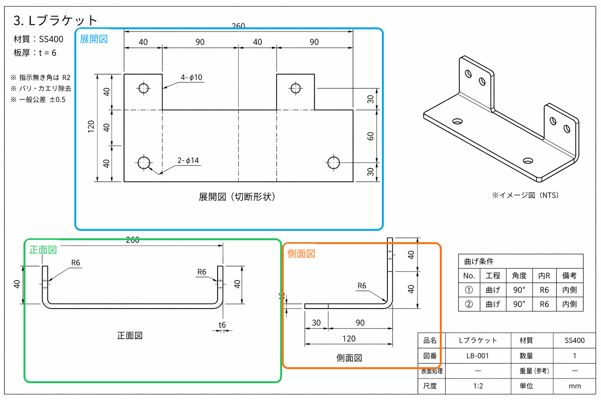

2D 比較出力
2D図面自動見積デモ
対象製品: Lブラケット LB-001
このページでは、会話添付の図面画像をもとに再構成した展開図、正面図、側面図を 簡易 2D CAD スケッチと並べて比較できます。見積は SS400、展開 260 x 120 x t6、 2 回の 90° 曲げ、4-φ10、2-φ14 を前提に固定し、デモ用マスターから 自動概算を表示しています。
概算見積
図面記載、推定、仮定を分けて表示します
元図面の注釈付きビュー
添付図面ベース
2D 比較出力
対象製品: Lブラケット LB-001
このページでは、会話添付の図面画像をもとに再構成した展開図、正面図、側面図を 簡易 2D CAD スケッチと並べて比較できます。見積は SS400、展開 260 x 120 x t6、 2 回の 90° 曲げ、4-φ10、2-φ14 を前提に固定し、デモ用マスターから 自動概算を表示しています。
図面記載、推定、仮定を分けて表示します
